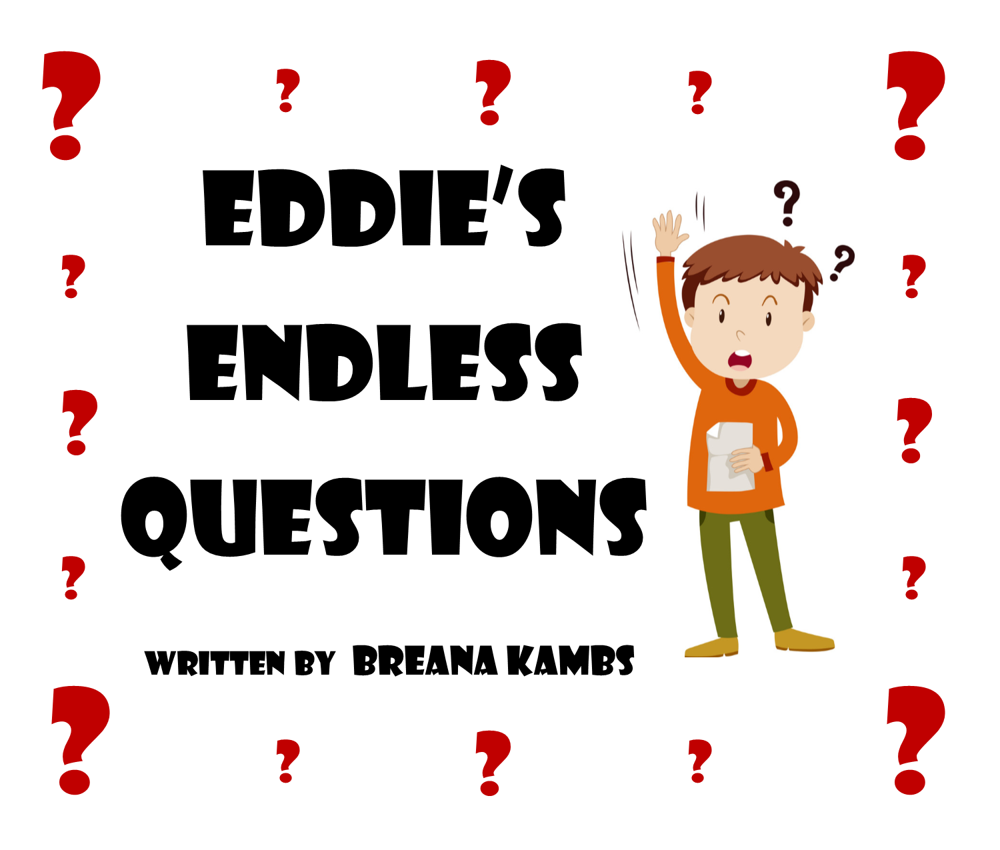

To their owners, Bella and Lucy lead pretty boring cat lives. Little do their humans know, Bella and Lucy are secret agents in a battle against the evil mouse gang, Scurry.

Unicorn has a venue, a disco ball, and plenty of friends, but does he have the moves? Dab your way through memorable mistakes and hilarious hiccups as Unicorn twists, twerks, and slides across the dance floor.

They say that time flies like the wind, but fruit flies like bananas. Follow the misadventures of O. Verley Ripe, an average banana turned superhero.

Eddie’s endless questions drive his teachers, his friends, and even his parents crazy. When they tell him to stop asking so many questions, Eddie discovers something even more important than the answers.